« La force du karité et du Mossi »
Pays : Burkina Faso
Statut : Région
Provinces : 3
Départements : 23
Chef-lieu : Kaya
Président du conseil régional : Adama Sawadogo (2016-2020)
Code ISO 3166-2 : BF-05
Code INSD : 06
Population (2024) : 2 134 400 hab.
Densité : 108 hab./km²
Coordonnées : 13°15'N, 1°00'O
Superficie : 19 840 km²
Fuseau horaire : UTC+0
Indicatif téléphonique : +226
Kuilsé, qui signifie « cours d’eau » en mooré, tire son nom des nombreux plans d’eau qui irriguent son territoire : le fleuve Nakanbé, les lacs Bam, Dem et Sian. Ce lien profond avec l’eau façonne les modes de vie locaux, les pratiques agricoles, mais aussi les récits et symboles culturels. Composée de trois provinces le Bam (chef-lieu : Kongoussi), le Namentenga (chef-lieu : Boulsa) et le Sanmatenga (chef-lieu : Kaya), la région constitue un carrefour d’histoire, de cultures et de potentialités.
Le barrage de Korsimoro permet la pratique de cultures maraîchères hors saison : tomate, oignon, chou, laitue. Cette maraîchericulture est une activité génératrice de revenus par excellence, particulièrement rentable entre les mois de janvier et mai.
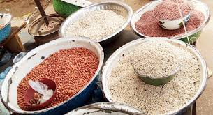
Céréales : sorgho, mil, maïs, niébé
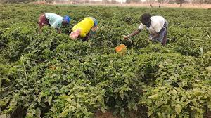
Maraîchage irrigué (barrage de Korsimoro)
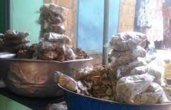
Arachide (dont le kurakura, spécialité locale)
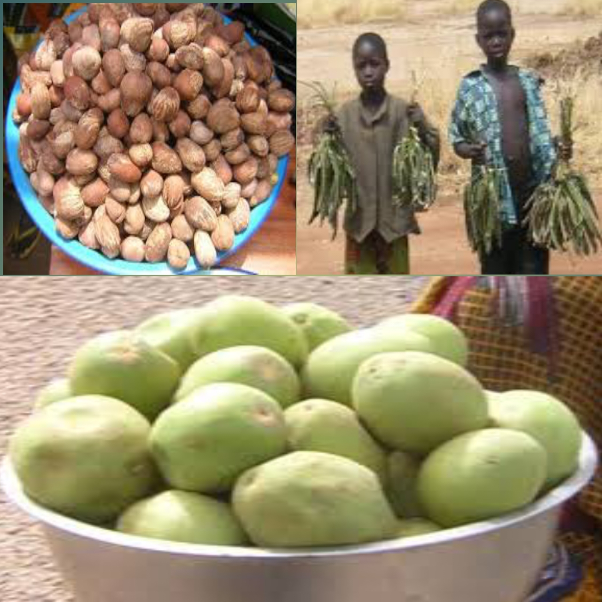
Karité et néré
Le sous-sol de la région recèle des gisements importants de clinker, matière première essentielle à la fabrication du ciment, notamment dans les communes de Korsimoro et Boussouma. Ce potentiel attire l'intérêt des investisseurs et ouvre la voie à des partenariats pour le développement d'unités industrielles locales.
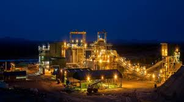
Mine de Bissa Gold Gisement aurifère
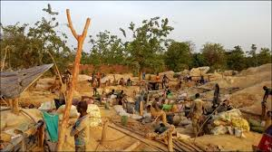
Elle abrite de nombreux sites où des milliers d'orpailleurs opèrent, notamment dans les provinces du Bam, du Namentenga et du Sanmatenga
Kuilsé,est un carrefour culturel du peuple Mossi caractérisé par ses nombreux points d'eau (Nakanbé, lacs Bam, Dem, Sian), ses cours royales et son artisanat. Elle abrite un riche patrimoine immatériel, des sites de métallurgie ancienne, et des traditions vivantes centrées autour de la chefferie traditionnelle et du reboisement, comme le Bosquet du Dima de Boussouma
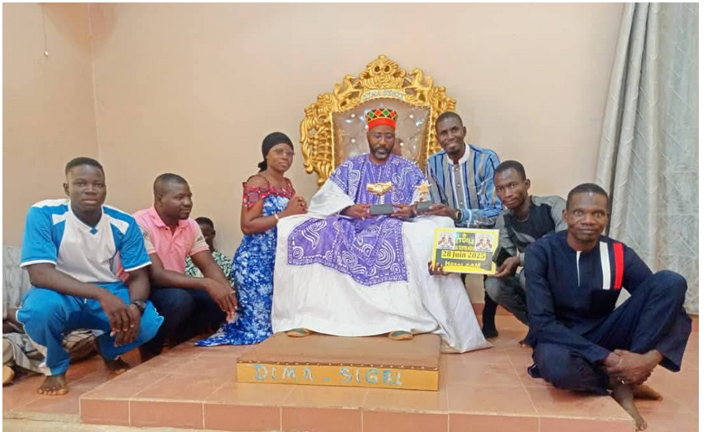
Cour royale de Boussouma : Site majeur d'autorité traditionnelle et historique, incluant le Bosquet du Dima de Boussouma qui est un lieu de cohésion sociale et de reboisement.
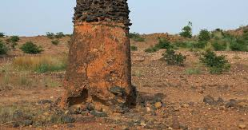
Haut fourneau de Korsimoro (Yamganghin) Ce fourneau traditionnel moaga, inscrit sur la Liste indicative du patrimoine mondial de l'UNESCO, est un témoin précieux du savoir-faire métallurgique ancestral. Il constitue aujourd'hui une opportunité pour développer un tourisme patrimonial et éducatif, en lien avec les circuits scolaires, universitaires et culturels.
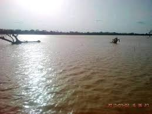
Lac Bam : Point d'eau pour la pêche et le tourisme.
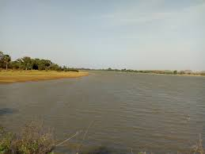
Lac Dem : Point d'eau pour la pêche et le tourisme.
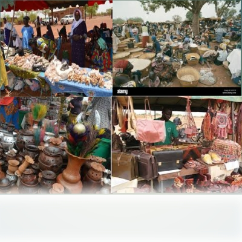
Marché traditionnel de Kaya
Dans les communes de Kongoussi, Boulsa et Kaya, les traditions moaga et peulh s'expriment dans les danses, la musique, l'artisanat et les rituels. Infosculturedufaso La région met en avant ses potentialités artisanales : la transformation du cuir (sacs, sandales finement travaillés), le tissage et l'arachide sous toutes ses formes (dont le kurakura). La qualité du cuir de Kuilsé est particulièrement reconnue. leFaso Festivals Le Festival Wedbindé de Kaya célèbre l'art de la forge et les traditions du Sanmatenga. Il attire des visiteurs pour des démonstrations de forgerons, des expositions d'artisanat, des concerts et des conférences sur les patrimoines locaux.
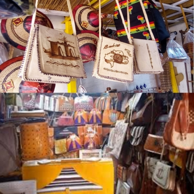
Les artisans locaux produisent des articles de haute qualité (sacs, chaussures, accessoires) La confection de textiles traditionnels, utilisant des techniques de teinture ancestrales
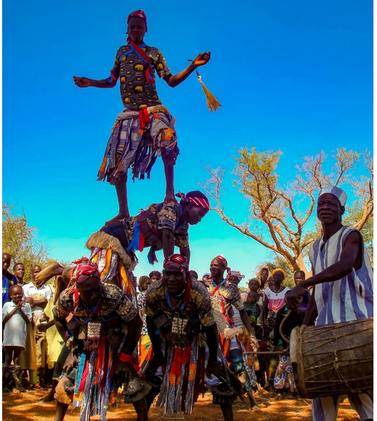
Festival Wedbindé de Kaya
Le chef-lieu dispose de structures de formation diversifiées, allant de l'enseignement général aux centres de formation technique. La région bénéficie également de la présence d'un centre universitaire rattachée à l'Université Joseph Ki-Zerbo. mais aussi de la Direction Régionale de la Culture, favorisant les synergies entre éducation et patrimoine
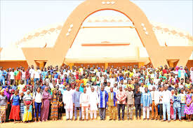
Formations du CUP de Kaya Le Centre Universitaire Polytechnique de Kaya (CUP/K) offre les formations suivantes : Statistiques et Informatique Appliquées à l’Economie (SIE) ; Comptabilité, Contrôle et Audit (CCA) ; Sciences et Technologies, mention Mathématique.
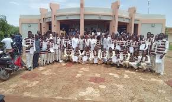
Université Privée Catholique Saint Joseph: Domaines de formation:Agriculture,Comptabilité et fiscalité,Conception et administration de bases de données et de réseau, Construction et génie civil,Électricité et énergie,Génie industriel,Gestion-Eau,Marketing.
Carte de situation
Provinces
Le saviez-vous ?
Le marché de bétail de Kaya est l'un des plus importants d'Afrique de l'Ouest. Chaque lundi, plus de 10 000 bovins, ovins et caprins y sont échangés, attirant des commerçants de tout le Burkina et des pays voisins.